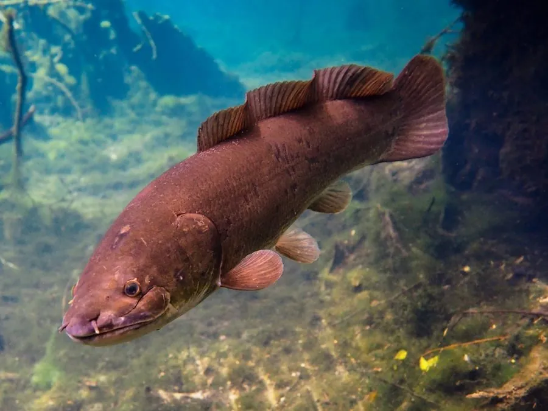

鱼类 · 动物界
弓鳍鱼 Amia calva

北美东部的活化石鱼类，背鳍低长如弓、尾近圆形，能用鳔呼吸空气，在缺氧沼泽中存活，是弓鳍鱼目中唯一现存的物种。
- 分类
- 门脊索动物门纲硬骨鱼纲目弓鳍鱼目科弓鳍鱼科属弓鳍鱼属
- 栖息环境
- 河流、湖泊、沼泽、牛轭湖与水草茂密的静水区
- 地理分布
- 北美洲五大湖、密西西比河流域及美国东部与加拿大南部的河湖
- 保护级别
- IUCN 无危（LC）
物种志
弓鳍鱼体长 50–70 厘米，最大可达 1 米，体重 2–4 千克。体呈圆柱形，背鳍低而长，几乎横贯背部后半段，形如一张弓，因此得名；尾鳍近圆形，具一条明显的尾柄黑斑，雄鱼尾斑周围常带橙黄色环。体色橄榄褐至暗绿，体侧有不规则深色斑纹，腹部浅黄。头部具骨质鳃盖，鳞片较薄。
它们分布于北美五大湖与密西西比河流域的河流、湖泊、沼泽与牛轭湖，偏好水流缓慢、水草茂密的水体。弓鳍鱼是伏击型捕食者，捕食鱼、虾、蟹、蛙与水生昆虫。它的鳔具呼吸功能，可直接吞入空气，因此在夏季缺氧的沼泽中也能存活。繁殖期在春季，雄鱼在水草间筑巢并守护鱼卵与刚孵出的幼鱼，幼鱼尾部有一条明显的黑斑，常被误认为另一物种。弓鳍鱼是弓鳍鱼目中唯一现存的物种，被称为“活化石”。
形态与习性
- 体长约 50–70 cm，最大可达 1 m
- 体重约 2–4 kg
- 食性鱼、虾、蟹、蛙与水生昆虫
- 繁殖春季雄鱼筑巢护卵，并守护刚孵出的幼鱼
- 呼吸鳔具呼吸功能，可直接吞空气，耐低氧
- 识别特征背鳍低长如弓，尾柄有一块明显的黑斑
- 寿命约 10–12 年，个别可达 20 年
趣味知识
- 弓鳍鱼的背鳍又低又长，横贯大半个背部，像一张拉开的弓。
- 它尾柄上的黑斑是辨认它的快捷标志，雄鱼斑外还有一圈橙黄。
- 它是弓鳍鱼目唯一活到今天的物种，堪称淡水里的活化石。